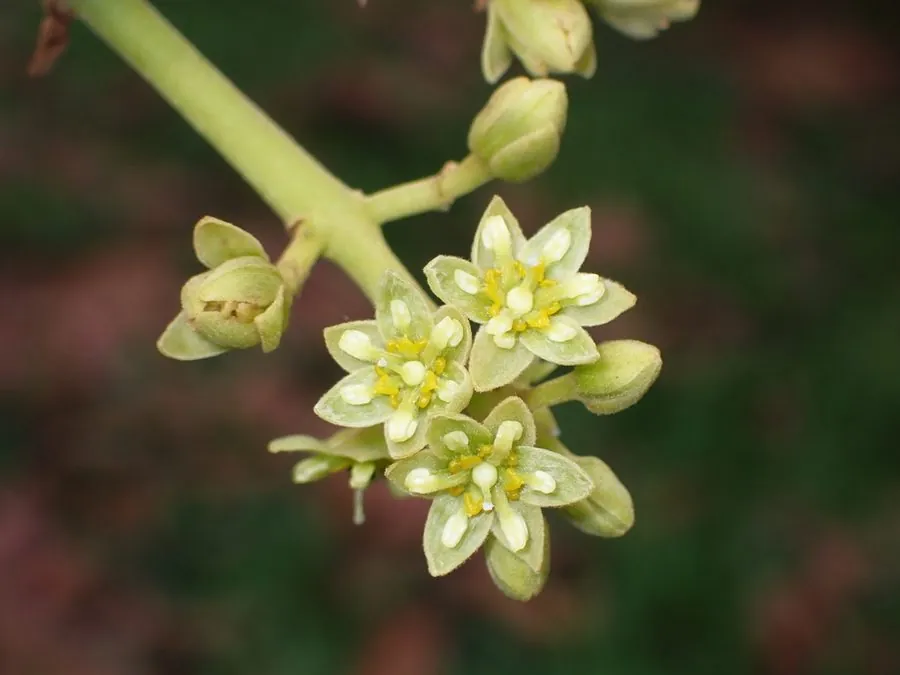

乔木 · 植物界
鳄梨 Persea americana

樟科常绿乔木，果实富含不饱和脂肪酸与多种维生素，口感绵密如黄油，被称为“森林黄油”，原产中美洲。
- 分类
- 门被子植物门纲木兰纲目樟目科樟科属鳄梨属
- 栖息环境
- 海拔 800–2500 米的热带、亚热带高原，喜温暖湿润、排水良好的坡地
- 地理分布
- 原产墨西哥南部至中美洲；中国海南、广东、广西、云南、福建等地引种栽培
- 保护级别
- 暂无评估；中国未列入国家重点保护野生植物名录
物种志
鳄梨为樟科鳄梨属常绿乔木，高 10–20 米，树冠开展，树皮灰褐色并纵裂。叶片互生，革质，椭圆形至卵形，长 10–20 厘米，表面深绿有光泽，背面稍苍白。花小，黄绿色，组成顶生或腋生的圆锥花序；果实为核果，梨形或卵形，长 7–20 厘米，果皮绿色、紫黑色或红褐色，表面粗糙或有光泽，果肉黄绿色、绵软，中央具 1 粒大型种子。
鳄梨原产墨西哥南部至中美洲的高原地区，当地居民食用已有数千年历史，16 世纪传入欧洲，如今墨西哥、秘鲁、智利、美国加利福尼亚是主产区，中国海南、广东、广西、云南、福建等地有引种。它喜温暖湿润、阳光充足和排水良好的环境，不耐霜冻，幼树需适度遮阴。果肉含脂肪约 15%，以油酸等不饱和脂肪酸为主，可鲜食、拌沙拉、制酱或榨油，是近年流行的健康食品；种子与树皮在民间也有药用记载。
形态与习性
- 株高10–20 m，树冠开展
- 花期3–4 月，花小、黄绿色
- 果期8–10 月，果皮绿、紫黑或红褐
- 光照喜光，幼树期可稍耐阴
- 水分喜湿润，忌积水与长期干旱
- 土壤深厚疏松、排水良好的壤土
- 主要用途鲜食、沙拉、制酱，果肉可榨油
趣味知识
- 鳄梨果肉的脂肪含量约 15%，在水果中极为罕见，因而被称为“森林黄油”。
- 鳄梨与香樟同属樟科，叶片揉碎也有淡淡的樟脑气味。
- 鳄梨的英文名 avocado 源自纳瓦特尔语，意为“睾丸”，与其果实形状有关。
- 中国超市常见的“牛油果”即鳄梨，多从秘鲁、墨西哥进口。